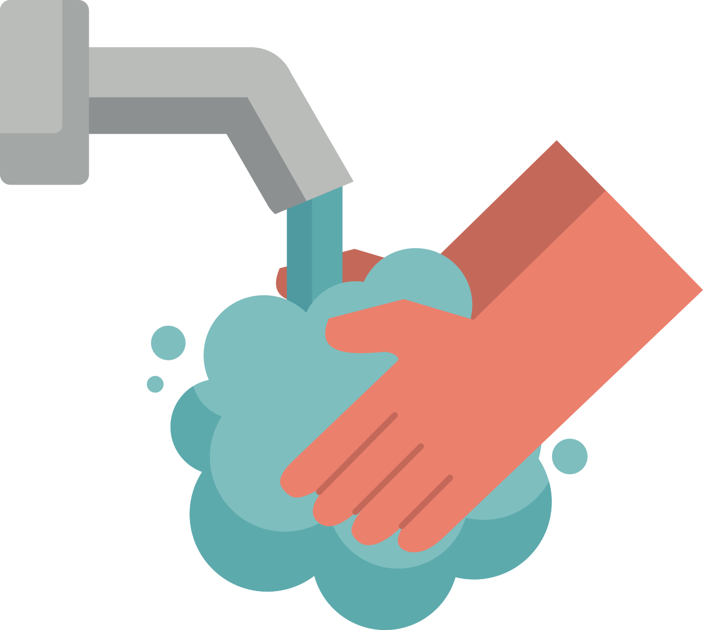

Mari bersama kita lawan COVID-19 #lawancorona
Statistik Kasus Corona
Statistik kasus COVID-19 di dunia
Lawan COVID-19 dengan melakukan pencegahan
Menutup muka dengan masker ketika berada di luar
Hindari memegang wajah menggunakan tangan

Rutin mencuci tangan sebelum atau sesudah beraktivitas
Postingan warga indonesia melawan COVID-19 dengan tagar #lawancorona
Tweet #lawancorona